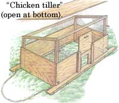
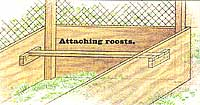
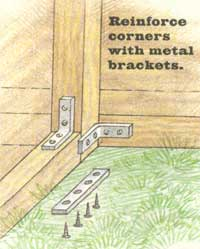

Garden and Yard
Building both fixed chicken pens. By John Vivian
You can shelter chickens in anything that offers protection form the elements, is night-predator-proof, provides shelter form winter drafts and good ventilation at same time, and-most crucial-supplies shade and airflow to protect the birds from summer heat.
I’ve built hen quarters into corners of barns and in sheds and shacks of several designs and vintages, and I’ve seen them kept in 50-gallon ail drums, derelict autos, hollow logs, elegant gazebos, sections of galvanized road conduit, an ancient beached lobster boat, and on the back porch of more than one mountain home.
In her later years my great-aunt Mame kept her two favorite laying hens in the old homestead’s log house during the winter. They shared the cats a nest box in the corner behind the old wood-burning range and a swinging-hatch door into the woodshed and barn and on outside. As Mame elegantly showed, eccentricities are one of the underappreciated luxuries of age.
To keep your own layers and breeding stock content while cooped up during the winter, you’ll want to provide each 4 square feet of floor space and a good 2 square feet of above-floor roosting area.
Chickens feel safest roosting at night on an easily gripped tree-branch substitute: a 2- to 3-inch-wide rough pole or board located a foot or more above the floor. Roosts must be firmly fastened so they won't roll when several heavy birds jump/fly up on them and rustle around to find a comfortable sleeping position.
Put in enough roost that each bird will have a good linear foot to call its own. You can use a single long roosting board or (better in cold climates, so birds can dump together) arrange shorter roosts in a rising tier, each board a foot away from the others in height and lateral distance.
Droppings will accumulate more heavily under the roosts, so you can reduce cleaning chores by building a tray under the roosting area that can be pulled out and cleaned every few weeks.
With a family-size over-wintering flock of a dozen hens and three roosters, you'll need 15 linear feet of roost in 90 square feet of floor area. That's a henhouse 10 feet square or, more convenient to move and to build from standard plywood and 2-by lumber: 8 by 12 feet. The latter can be built from 16 sheets of plywood, #26, 2 x 4s and $10 worth of door hardware and poultry wire for $200 and change.
With a tier of three roosts at each end, the 8 x 12 basic coop will house an added 25 young replacement laying hens and meat birds once weather moderates enough that birds can get out on freerange or into a fenced yard for most of the day.
A gravity feeder and vacuum water font will service a flock for up to a week. It is best to place feeders on a low platform so hens can't kick litter into the lip. In winter, place a plug-in heater under the water font to keep water thawed.
Hens lay best in a single dark nest box that can accommodate two or more birds at one time. The higher it is, the better they like it. Over the feeder and water font, I build a nest box that is a yard long, 18 inches deep and high, with a sharply sloped roof, a single access hole, and a full-width landing board in front. Most hens will fly up to lay, though I provide a ramp from floor to opening for those inclined to be pedestrians.
The back of the nest is left open-but facing a hatch built into the back of the house. That way I can open the hatch and collect eggs and service feeder and water beneath the nest box at one time, but not have to enter the pen.
A full-height door or easily removed access panel is needed to give you periodic access to the house for cleaning.
The birds will need a door in front; I rig an up-and-down sliding door over a foot-square opening. It is operated by a rope on a pulley, so I can open it in the morning and close it at night without entering house or run.
The house will need a fenced run at the front. I run poultry wire around saplings hammered several inches into the soil. Bend the lower foot of 6-foot-high wire out horizontal at ground level and predators can't burrow in.
There is a better way to raise pullets and meat birds for the one or two months they spend in full-time eating between end of brooding and the time that cockerels and excess young hens go into the freezer and replacement laying hens go into the larger winter house. That is to construct one or more light-weight, open-bottom mobile houses to use as free-range shelters or as chicken-powered tillers. See the illustration labeled "Chicken-tiller."
You don't raise meat birds or layers to full size under this system, so they only need 3 square feet of floor space for rainy indoor days: 3 square feet apiece for 12 birds = 36 square feet, a shelter that is 6' x 6' or 4' x 8' in area.
A little house 4' x 8' in floor area and 4' high in front and 3' high in back weighs less than 100 pounds-chickens and all-and can be rigged on wheels or sled runners to be pulled around by hand or a small lawn tractor. To house more than a dozen birds at a time, it is better to build two or more of these than a heavier, more elaborate shed that needs a large machine or team to pull it.
The mobile "tiller-shed" can be made from #3, 4' x 8' sheets of 1/4" ply, a couple of 2 x 4 x 12s, eight or a dozen 2 x 2 x 12s, and 24 running feet or so of 48" poultry netting...for about $50 or $60 for allnew materials.
One or more can be left in the center of a well-fenced pasture and kept stocked with water. The birds can be closed in at night and released in the morning to forage all day. To promote growth and give them good finish, scatter 1/8 to 1/4 cup per bird of high-protein, vitamin-and-mineral-supplemented broiler ration inside or at the front porch area of the house as scratch feed at each day's end. The ground inside the house and outside where you scatter the scratch will be quickly cleaned of living plants, seeds, and bugs by the flock.
It is this propensity of chickens to scratch that lets your mobile house serve as a chicken-powered tiller. The birds come equipped with a pair of most efficient tiller tines: the three sharp and powerful claws on each foot. The jungle fowl's natural feeding behavior is to scratch at the soil, move backward a few steps, and peck at the grubs, small bugs, and buried seeds it has turned up with each little tilling. As they stir the upper soil layer, droppings are mixed in, and over several days or a week, the birds will turn a small patch of meadow into a patch of nicely cultivated, debugged, weed-and weed-seed-free, prefertilized garden sod.
All you need do is pull the house to the adjacent plot of meadow and plant the just-tilled section to garden crops or add a green manure to be tilled in later. If you don't plant the chicken-tilled ground, perennial roots and windblown weed seeds will establish a super-meadow on the fertilized ground in no time.
You'll have to fence the chickens out of the strip of new garden running along the house's path of travel. Easiest is to surround it with yard-high poultry netting supported on lengths of sapling stuck into the ground every few feet. Two rolls of netting-one on each side of the new garden plot-can be unrolled as the house is moved and hooked to nails on the house's rear corners with every move.
If full free-range is impractical, you can rig a fenced run at the front of the house and move both house and run when the soil under them is well tilled. Moving a run is a lot of work. Buried support poles must be pulled and freed from snaggly netting. The lower margins of the netting will be buried in sod, and hard to remove without pulling the netting all out of shape so it is near impossible to reset even at a new location.
For temporary runs, I use a dozen 3-inch-square rigid panels of modular pigpen. The panels are made from sturdy welded wire-mesh hog fence and have loops along the edges. You align loops along the edges of adjoining panels and run a long steel rod through interleaved loops to join them temporarily and also anchor them into the soil. You can turn corners or run straight at each joint. Made from galvanized steel, a set of hog panels will last for years. Four- or eight-panel squares, rectangles, or circles will stand upright and serve to graze or hold small stock of all kinds: puppies, lambs, piglets, new calves, hobbled colts, and small children. They're also good to support garden vines such as semi-tall peas, or rig them in triangles as tomato cages.
If the birds decide to fly out of the run, clip the flight feathers of one wing. In a few short weeks, you'll have combined a power fertilizer with a pest-control system, and created a conversation piece for the neighbors in the bargain.
|
 ILLUSTRATIONS: STEVE KATAGIRI |
 |
 |